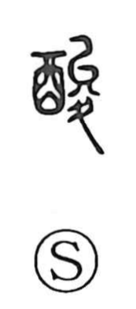

酸

Kun: suppai, sui | On: san
sour ・ acid ・ painful ・ bitter hardship
Explanation
This is a phono-semantic character: the left component 酉 evokes the world of fermented liquids—wine and vinegar—while the right component 夋 serves as the phonetic. The Shuowen glosses it as “vinegar,” hence the core sense of the sour taste of vinegar. Because sour is a strong, penetrating taste, the word broadened to describe acute suffering and hard circumstances, as in expressions for bitter pain and extreme poverty. Within the classical scheme of the five tastes, sour is one, and like the others—bitter (苦), sweet (甘), and pungent (辛)—its name is also extended metaphorically to human emotions.